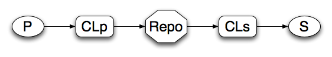

A publisher-subscribe system using
Pyom was develop as a tool primary to do identity management, implementing the functions defined in to the Openmetadir model. The goal was to produce something that would help us keep several different information sources in synch. At the same time we did not want to limit what people wanted to keep synchronised.
Now, if you want to synchronise two information sources one being the source and the other the receiver, and you have an intermediate, you have to:
If you increase the number of information sources and receivers and if they are built on different technologies and therefor tend to use different internal representations of data, then you definitely want to have a very rich information representation in the centre. You do not want a central information representation for any source-sink pair since this would lead to a NxM conversion problem. Instead you want one or a very limited number of central representations more or less independent of which sources and sinks that are coupled to the metadirectory system. Given that you dealing with a specific set of objects. Another thing that will become obvious when you increase the number of sources is that the total system description will become very unstable. Hence, you must to be able to handle version control.
You also want to allow for usage of any type of transport protocol.
These points lead us to define the two corner stones that the OpenMetadir project, and therefor Pyom, is build on.
The goal of this document is to give you enough technical specifics to understand how Pyom works in this context.
So what is a Pyom system ? Going back to what I said above, in order to synchronise a source and a sink, you have to:
So this is the basic pattern. On top of this you might want to save all the messages for future reference or you might want to keep the state of objects (if that is what the source transmits information about) somewhere in the center.
So a simple system might look like this:
Notice here that the base system is dealing with unidirectional flows fo data and that we expect the system to be event based. That is events in the source system will trigger export of information describing the event.
A publisher (P) that sends information about events using a transport protocol, to a node (CLp) that converts between the data format of the publisher and the central system. That node will then forward the event messages to a repository (Repo) which might keep a log over all the messages and/or keep a representation of the state of the object on which the events happen. The repository, in the SWAMI case a neorepo ([neorepo], [neoUsage]) will send messages to the conversion node (CLs) for the subscriber when the state of an object has changed. And eventually the converter for the sink will transmit the information to the subscriber (S). Now, in some cases the converters might be implemented in the publisher/sink but that will be quite rare, for some time to come, unless you have full source control of the publisher/sink.
So, if by know are interested in testing pyom you have to install it. More on that here install pyom .